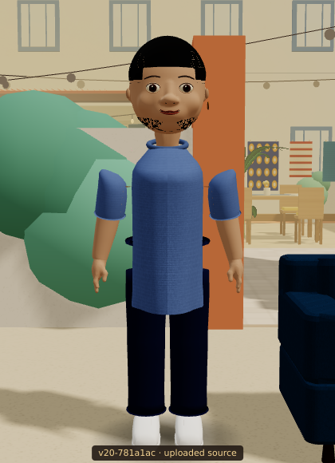
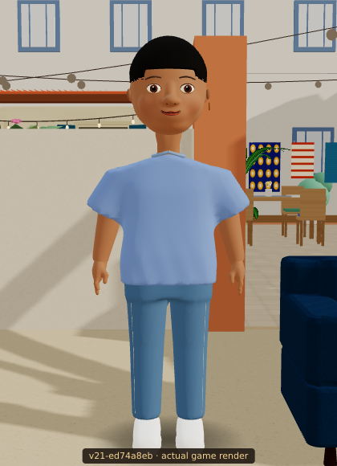
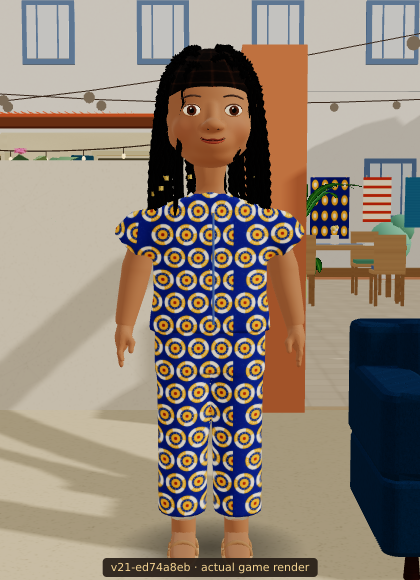
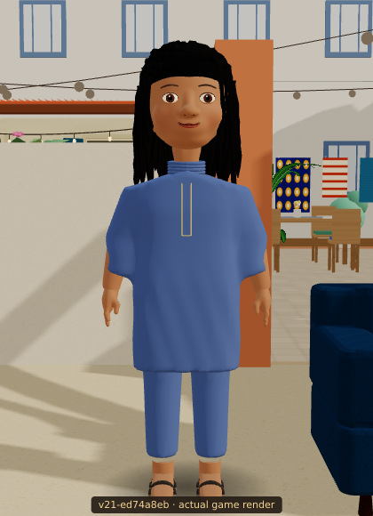
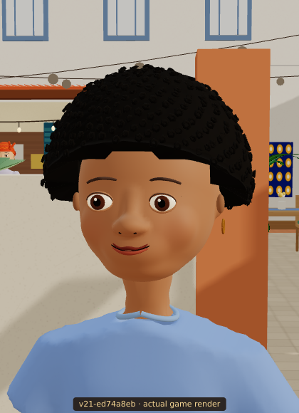
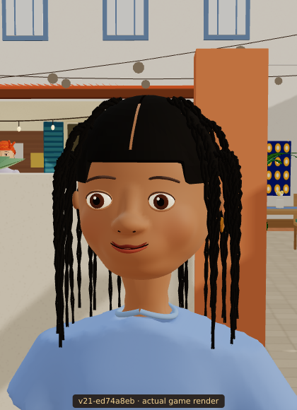
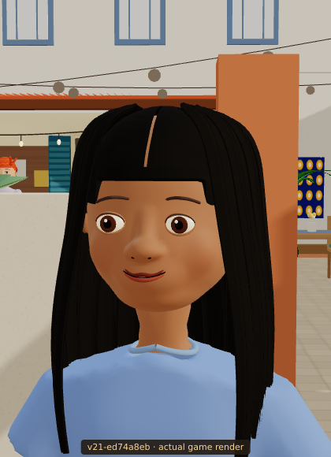
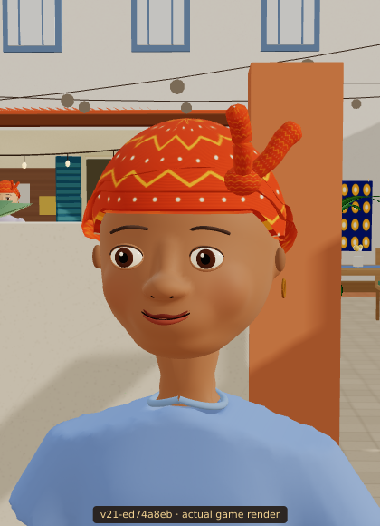

The uploaded v20 compared with the updated project, rendered inside the game.

Separate shoulder pieces and the older narrow torso.

Joined shoulders, a looser tee and readable blue denim.

Connected shirt, collar and consistent print scale.

Continuous tunic, short collar and matching trousers.
Both players use the same character and wardrobe pipeline.



